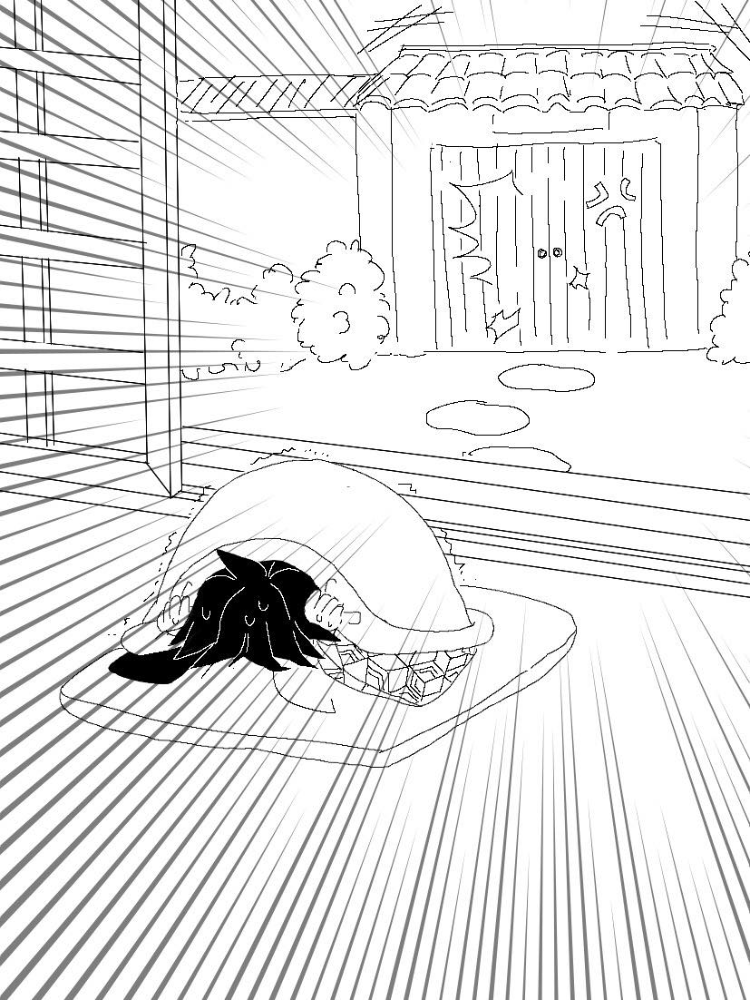

《獨居千萬小心》
富岡義勇此時面臨了人生最大的難關之一。
咚咚咚咚的撞擊聲不絕於耳，敵人就在自家門外，並且試圖強行入門。
門上撞擊聲愈發激烈、一聽就知道絕對來者不善；富岡只想裝死，希望這樣可以騙過對方誤以為自己不在家。
「富岡先生──」
門外響起了呼喚聲，聽起來是個女孩子。
「我知道你在家──別裝死了──」
「⋯⋯」富岡還在垂死掙扎，他相信這只是敵方為了誘騙他的詭計，因此堅決不應門。

「⋯⋯好吧。」少女說完這句話後，門外便再無動靜。
一切彷彿又回歸到往常的安寧──
「──富岡先生！！」碰的一聲，房間的紙門被用力拉開。
──才怪。
＊＊＊
「我不是說，你回來第一件事就是要先來蝶屋報備嗎？」
跪在房間中央低著頭的富岡，前面站著的是蝶屋的主人、胡蝶姊妹之一的胡蝶忍。
正是現任花柱胡蝶香奈惠的妹妹。
「但我覺得我身體沒什麼大礙⋯⋯」富岡囁嚅著說，不敢看她。
「沒什麼大礙是我說了算！」忍抬高音量，「我才是負責治療的人吧！」
富岡上次任務受了傷後，忍本來預計他要躺一個禮拜；結果不到五天就被他逮到機會溜出蝶屋，而且還剛好遇到錆兔跟真菰要出合同任務，就這樣無縫接軌跟他倆同行跑得遠遠的，讓忍氣得直跳腳。
「上次還真的被你騙到了⋯⋯」忍氣呼呼地，「裝得一副人畜無害的樣子，還想說你終於情願乖乖養傷了，結果居然趁我不注意的時候落跑。」
富岡雖然平時是個性格溫和的好好先生，但唯一不願妥協就是他真的很抗拒吃藥，尤其忍煎的藥總是比小葵或其他蝶屋的孩子煎的更要苦上數倍。
忍也深知富岡這點，每次在他住進蝶屋後都會嚴格看守；但上次剛好遇到一批隊士負傷被送來治療，忍忙得有些分身乏術，看富岡又一副認命聽話的模樣，她一個疏於注意，就被他趁機溜了。
「抱歉⋯⋯」富岡低聲說。
「你是該抱歉。」忍一臉不悅，「不說廢話了，上衣脫了、趴下。」
「⋯⋯噢⋯⋯」
雖然有點心不甘情不願，富岡還是依言脫去了羽織、黑色制服和裡面的襯衫後，趴在塌塌米上。
他的腰上纏了一圈繃帶，忍從醫藥箱拿出剪刀剪開後，露出下面的傷口。
「嗯⋯⋯」忍觀察著傷處。
事實上就如富岡所說，的確是癒合得差不多了，難怪他像個沒事人一樣到處跑。
她伸手撫過已經變成疤痕的傷口，感受著新生皮膚的觸感。
腰背傳來一陣被輕觸的搔癢感，富岡不明顯的顫抖了一下，疑惑的向後問道：「⋯⋯忍？」
「還沒好啦，忍耐一下。」
忍將雙手放在他背上，不時這邊捏捏那邊揉揉，搞得富岡又麻又癢。
「我這樣按，你有感覺哪裡會痛或不舒服嗎？」忍一邊壓按他的肌肉，一邊問道。
「⋯⋯沒有。」與其說不舒服──倒不如說有點太舒服了、富岡心底覺得忍應該都可以去兼職按摩師了。
「⋯⋯好吧，看來你真的沒什麼問題。」
停止了手上的按壓，忍悻悻然的道。還不忘順手擰了富岡的耳朵一把。
「痛、痛⋯⋯」富岡哀號，忍每次擰他耳朵都沒在客氣的；而且她人那麼小一隻手勁卻大得異常，這讓富岡一直百思不得其解。
正當他撐起手臂要起身時，感到背上突然多了一團重物壓著──
＊＊＊
「晚上好啊，兩位。」
蝶屋的另一位當家，現任花柱‧胡蝶香奈惠，向來訪的兩人打招呼──是現任水柱‧錆兔和其繼子真菰。
「有哪裡受傷或不適的嗎？」
「任務很順利，沒什麼事。只是想說來拿點常備傷藥。」
「那，要進來喝杯茶嗎？」香奈惠邀約道，「剛好今天有買美味的羊羹。」
「！」一聽到有美味的點心，喜愛甜食的真菰眼睛一亮：「沒關係吧，錆兔？」
「可以啊，也不趕時間。」錆兔微笑道。
香奈惠帶領兩人進了會客間後，請小葵泡茶和準備點心。
等待茶點的空檔，三人開始閒話家常。
「小忍不在嗎？」真菰向香奈惠問道，剛剛進門到現在都沒見到忍的影子。
「忍的話稍早就出門囉。」香奈惠答道，「應該不會太快回來。」
「啊、果然嗎？」真菰黠慧的笑了一下。
「富岡君怎麼沒跟你們一起過來呢？」
「怕被罵吧，聽到我們要來蝶屋，他馬上就腳底抹油溜回家了。」錆兔調侃著他同門的師兄弟道。
「是義勇不好啦，小忍也是擔心他的傷勢才會生氣。」真菰搖頭嘖嘖，「所以我就幫小忍一個忙，我們一回來就派鎹鴉來知會她了。」
「原來如此。」香奈惠點點頭，「但剛剛我又收到忍的鎹鴉通知，說她今晚不回家吃飯⋯⋯看來氣歸氣，感情還是很好呢。」
三人「嗯、嗯」的一同不住點頭，相視而笑。
於此同時，茶水和羊羹也送上來了。
像這樣偶爾聚在一起閒談著是他們生活中最放鬆愉快的時光，恰好他們幾個全是系出水之呼吸，更有種接近一家人的感覺。
「富岡君仍是自己獨居嗎？」香奈惠想起富岡雖然跟錆兔、真菰同門，但似乎不同居。
「是喔，其實我覺得一起住也沒關係，畢竟以前跟鱗瀧先生修行時不就同住一個屋簷下嗎？只是義勇很堅持他不是繼子，所以不能住在錆兔的宅邸。」真菰搖頭嘆氣道，「真三八，怎麼這種地方如此死腦筋。」
「但他還是很常過來我家一起吃飯或過夜啦。」錆兔補充道，「也許讓他有一點個人空間也好。」
「哎呀。」香奈惠似乎想到什麼，「這樣的話⋯⋯不要緊吧？」
「不用擔心，那可是義勇欸。」錆兔拍拍胸脯保證，「他不會亂來的。」
「不，我不是擔心忍。」
香奈惠啞然失笑。
「我是指⋯⋯」
＊＊＊
富岡轉頭一看，只見忍好整以暇地坐在他的背上。
「？？」
「既然你身體沒事了，做個三百下伏地挺身應該也是輕而易舉吧？富岡先生。」忍一臉壞笑。
「呃⋯⋯？！」富岡傻眼，三百下？還要背著一個人？
「快點喔，十分鐘內做完。」忍笑嘻嘻道，「我講完這句話你還有九分五十秒。」
「為什麼我要⋯⋯」
他想抗議，但忍快一步打斷他──
「如果做不到，下次任務回來我又會來拜訪你喔。」
「⋯⋯！」
絕對不要⋯⋯！富岡心底吶喊，一邊開始拚了命的做起伏地挺身。
「噢噢噢～動作好快啊～」騎在被使喚(?)的苦主背上的忍開心的像是拿到新玩具的小孩。
儘管富岡的上下起伏震動劇烈，但忍似乎一點也不受影響，平衡感絕佳的安坐著。
「一百五十一、一百五十二⋯⋯」
富岡一邊報數一邊揮汗如雨，忍在背上跟著他一起複誦。
「一百五十三、一百五十四⋯⋯」
距離目標還有一半的額度，富岡看來似乎仍游刃有餘、速度也很穩定。
「一百八十五、一百八十六⋯⋯」
轉眼間已快到兩百，快解脫了──
「兩百二十、兩百二十一⋯⋯」
富岡想說反正忍也會一起報數，於是他便不再開口，全心全意在衝刺最後關頭。
「兩百五十五、兩百五十四⋯⋯」
剩最後五十──！富岡忍不住加速，這個時候就不用再保留體力了。
「兩百三十一、兩百三十⋯⋯」
「？？？」回神細聽，富岡才驚覺忍的報數好像哪裡不對，「等、等一下──」
「怎麼了？你還有七十下喔。」忍笑咪咪的提醒。
什麼叫他還有七十下──這傢伙剛剛根本就是倒著數啊！
富岡一臉大便的問：「你是不是故意的？」
「什麼故意的？」忍仍是掛著燦爛的笑容，反問道。
「我應該是到兩百七十了吧⋯⋯你從兩百五開始就倒回去了！」
「咦？我有嗎？」忍吐吐舌，「會不會是富岡先生聽錯了呢？看來耳朵要檢查一下喔。」
「⋯⋯」
「好啦，既然你覺得從兩百五開始有問題，那就從兩百五開始重算吧。」忍一副故作大方的樣子道。
「⋯⋯」
為了避免忍又在報數上搞鬼，最後五十下富岡只好安分的自己數完。
做完伏地挺身後的富岡完全不想動，趴在地上跟榻榻米融為一體。
「不錯不錯，趕在十分鐘內做完了呢。」忍嘉許道，雖然她其實沒在計時。
「⋯⋯」富岡不想說話，他大概也猜到忍根本沒在計時。
「去洗個澡吧，富岡先生，你滿身大汗。」忍拍拍他的頭笑道，「還有廚房借我一下。」
「⋯⋯你自便⋯⋯」
把自己從榻榻米上拔起來，富岡緩緩的飄往浴室的方向去了。
三十分鐘後──
原本洗完澡昏昏欲睡的富岡，一聞到廚房飄出來的味道，整個人像打了興奮劑一樣清醒過來。
「你真的很好哄欸。」瞥見在廚房門外眼睛閃亮的某人，忍只覺得好笑。
富岡咚咚咚的跑到忍的背後，骨碌碌的盯著鍋子裡。
「好了嗎？」迫不及待的，富岡問。
「再等一下。」
過了五分鐘。
「好了嗎？」「再等一下。」
又過了五分鐘。
「好了嗎？」
「唉唷，你很煩欸。」忍又好氣又好笑，「這裡沒你的事，去外面等！」
說完忍粗魯的一把將富岡推出廚房。
「你頭髮擦乾一點啦！」順便叮嚀了這句後，碰的一聲，她拉上廚房的門。
＊＊＊
用過晚餐後，富岡很認份的自己收拾了兩人份的碗盤去洗碗了、順便清理忍煮完晚餐後的鍋碗瓢盆。
再回來時——發現忍躺在簷廊，睡得很好。
「忍、忍——」富岡搖搖她的身子，「想睡的話回家睡吧。」
「不要吵⋯⋯我今天忙一整天了⋯⋯」忍口齒不清的碎念，「明天六點再叫我起床⋯⋯」
「什麼啊。」富岡嘟囔，為什麼他非得要當鬧鐘工具人、不對，重點是——
「你不是要睡在我家吧？」富岡跪在忍旁邊，露出豆大的汗滴。
「⋯⋯」忍沒回話。
雖然家裡是有多的空房，認真她要過夜的話也無不可。
「⋯⋯如果你真的要睡了，至少先去洗澡吧？」富岡好聲勸道。
「⋯⋯但我沒有換洗衣物⋯⋯」忍含糊答道。
「我這裡有一些真菰之前過夜留下來的睡衣。」
「欸⋯⋯」忍懶懶的問：「原來真菰小姐會在你家過夜⋯進展真快。」
「什麼進展？」富岡愈發不懂忍在囈語什麼，「她跟錆兔本來就偶爾會來我家拜訪啊。」
「⋯⋯」
又一次安靜，看來她睡沉了。
「哈⋯⋯」
富岡嘆息一聲，拿了自己的羽織輕輕蓋在她身上。
「真要說進展的話⋯⋯根本是零吧。」他抬頭，望著皎潔的圓月：「今晚的月亮，真不錯啊。」
瞄了一眼躺在身旁已經正好夢的少女，他無奈的勾起嘴角。
「晚安。」
（完）